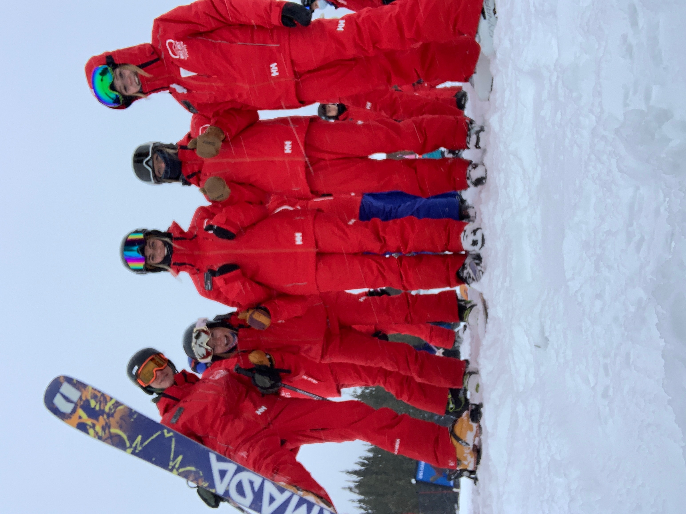
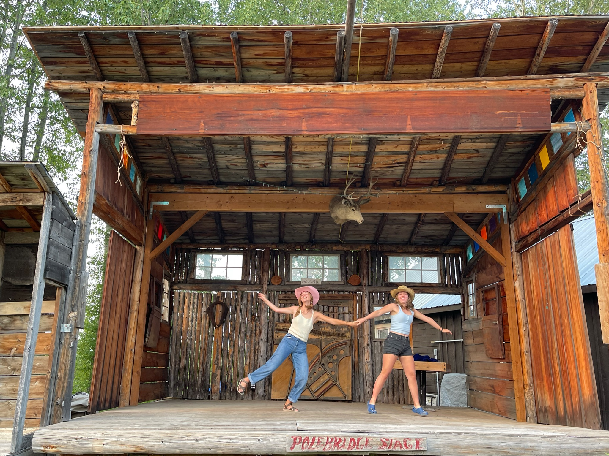
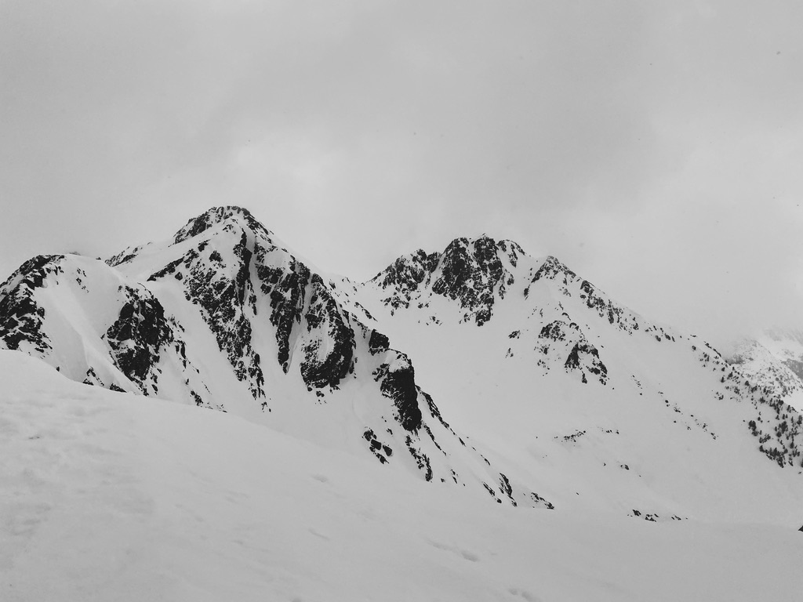

The parts of life that make the work better: movement, weather, rhythm, and remembering to be a person.

// skiing
Fast decisions, cold air, and a useful reminder that confidence is a practiced skill.

// dancing
Movement, timing, and a different kind of iteration — closer to improvisation than optimization.

// mountains
Scale helps. Big landscapes reset my sense of proportion in a very healthy way.
// snow
Texture, quiet, and weather as atmosphere — probably why I care so much about mood in interfaces.